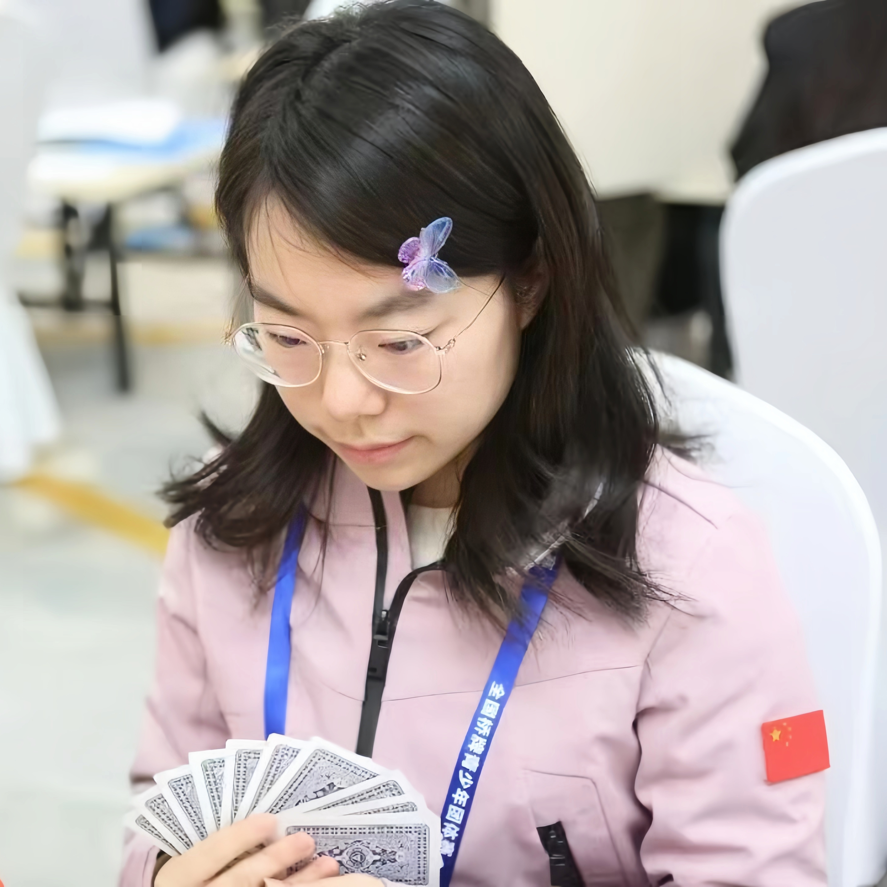
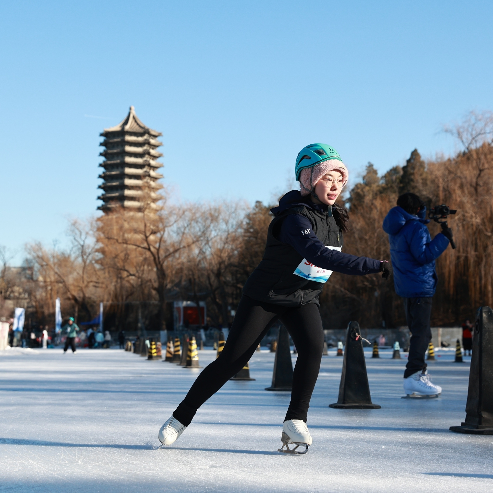

I am a senior undergraduate student at the School of Physics, Peking University. My undergraduate research advisor is Prof. Wenjing Liu. I am currently also a visiting undergraduate research intern at Harvard University, working with Prof. Eric Mazur and Prof. Eric J. Heller.
My full CV can be found here. You can contact me at ivy.xiaoya.cheng@stu.pku.edu.cn.
Research Interests
“How does order arise from disorder? How do we reveal it through light and matter?”
Photonics, Ultrafast Spectroscopy, and Quantum Dynamics
Publications
- “On-Demand Engineering of a High-Q Ultraflat Optical Ladder in Photonic Superlattices,” Fan Du*, Xiaoya Cheng*, Yidan Wang, Susanne F. Yelin, and Eric Mazur. Under review at CLEO 2026.
- “Universal Quantum Birthmark: Quantifying the Breakdown of Classical Ergodicity,” Xiaoya I. Cheng, Joonas Keski-Rahkonen, Anton M. Graf, Eric J. Heller. arXiv preprint; abstract submitted to APS March Meeting 2026 (presenter).
Hobbies

Bridge
- Member of the Beijing Junior Team
- Former President of the PKU Student Bridge Association
- Organized 10+ intraschool bridge tournaments since 2023
- Medaled at multiple national events
- 2023 China Bridge Championship (Swiss Teams)
- 2024 China Youth Bridge Teams Championship (U30)
- 2025 China Youth Bridge Teams Championship (U26 Women's)
Piano
- Have loved the piano since age 3 (now nearly 20 years of playing)
- Passed the Grade 10 (highest level) piano examination of the Shanghai Musicians Association at age 12
- Served as accompanist for the department choir and singing events at PKU

Skating
- Core Member of the Peking University Ice Sports Association
- 5th Place, Women's 800m Speed Skating, 2024 PKU Winter Sports Games